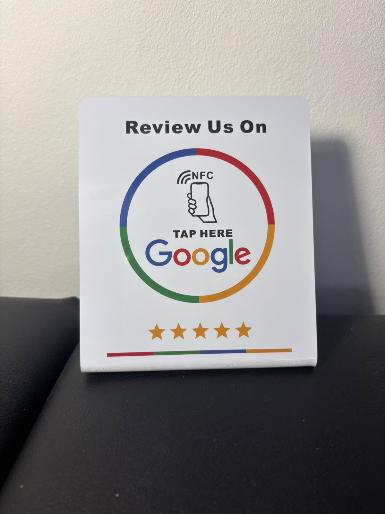
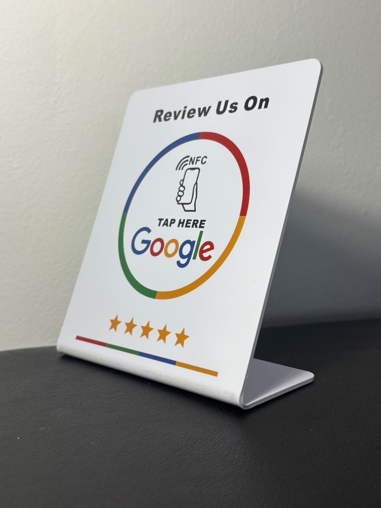

Acercan el móvil al stand y se abre directamente la página de reseñas de tu negocio en Google. Sin apps, sin buscar, sin excusas.

El stand lleva dentro un chip NFC, la misma tecnología con la que pagas con el móvil. No necesita batería ni enchufe.
En la barra, junto a la caja o en las mesas. Donde tus clientes esperan o pagan.
Por la parte de arriba del móvil, donde está el chip NFC. No hace falta descargar nada.
Directamente en tu ficha, lista para poner las estrellas y escribir. En dos segundos.
Sin trucos: acercamos el móvil al stand y en un segundo aparece la pantalla para valorar el negocio con estrellas y escribir la reseña. El cliente solo tiene que pulsar Publicar.

Si tus clientes buscan en Google antes de venir, las reseñas son tu mejor anuncio.
Sí. Los iPhone desde el modelo XS leen el stand sin hacer nada: solo hay que desbloquearlo y acercar la parte de arriba. En Android, el NFC tiene que estar activado (normalmente ya lo está).
Es poco común hoy en día: la gran mayoría de móviles actuales tienen NFC.
No. El chip se alimenta con la energía del propio móvil al acercarlo, así que no lleva batería ni hay que cargarlo nunca.
Escríbenos por WhatsApp y te pasamos el precio según cuántos necesites.
Escríbenos y te contamos cómo tenerlo en tu negocio.